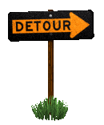

Ponj (@p6nj)

This is the name of my online persona. It comes from a strange video about the ball from the videogame Pong.
I'm a tall French pan enboy twink (he/him/*) trying his best to help everyone in his quest to find a place in this giant world.
You can check out my pronouns if you want.
Here's a link back home:

I am also compelled to provide you this link:

Location
This is where I post from :
Status
12/29/2024 - hello world
My first status. I'm currently attending Québec University at Chicoutimi as a Computer Science exchange student and actively looking for an internship in Québec or some other province. I'm in the winter break rn so I got time to feed my website.
Quick facts
Here are some quick facts :
- CarlSagan42 taught me English (fan since ~2016 <3)
- You're awesome
- I'm ENFP-T!
- I never lie
- I lie sometimes
- I am real (probably)
- Some musicians in big orchestras feel useless. They are part of the whole thing for sure but they feel like they're never heard. We do notice when they're not there however. Sometimes if you feel like a lost violin player in a huge orchestra, remember that you matter. Life for many of us wouldn't be the same without you. Next time you watch an orchestra, listen very carefully and sure enough you will hear them all. They are one.
- I use Gentoo after about ~18 distros (I have spare time)
- No I don't have a custom kernel! Just some patches...
Books
As a little chimp I used to read Ray Bradbury novels
translated to French. Now my all-time favorite is
Douglas Adams' good old Hitch-Hiker's Guide to the
Galaxy.
I also read a bit of Cory Doctorow. This guy's based af.
Series
I'm a Legion FX fan. When it comes to anime, I love Lain. Nichijou is the cutest thing ever. Azumanga Daioh is great. Evangelion is peak.
Music
Silly music playlists. They are my fuel. Waiter, more
glorp
please! 3 gazillion
Glumbos
also!!
Vaporwave, my all time friend. I love effects and my
favorite vaporwave artist is
Telepath.
I also enjoy... Playing music!
I have professional piano skills ("I got paid three
times" level 💪), can sing almost anything (training on
Queen), and I've been playing in orchestras for a long
time too (but more like hard keyboards: xylophone,
vibes, chimes, glockenspiel and marimba! and
triangle!).
Watch me pounding chains on the ground
here!
I made some music on Bandcamp but the last track is a mistake* and the only other thing is an old sloppy album. See Links.
Links
All my links are on Carrd.
Pics
Here are some proofs that I'm actually real :

Contact ⚡
| p6nj@fish.golf | |
| Discord | p6nj |
| telepathy | ... |
Drawings (secret)
Ah! You scared me.
Well, looks like you found some of my drawings. They're
from notebooks I had when I was 11 to 15 years old.
I filled 5 notebooks, from 50 pages to 100 each.
You could find me during that time at the playground alone on a bench, folded like a shrimp, focused, filling these with pencil drawings, games inspired from magazines I made for myself and small essays on life and everything.
Life as a loner was hard but it didn't matter.

The water droplet was my main character, more like a species: Miramiro. The creature was inspired by a drawing from my older sibling, who's also my favorite artist.